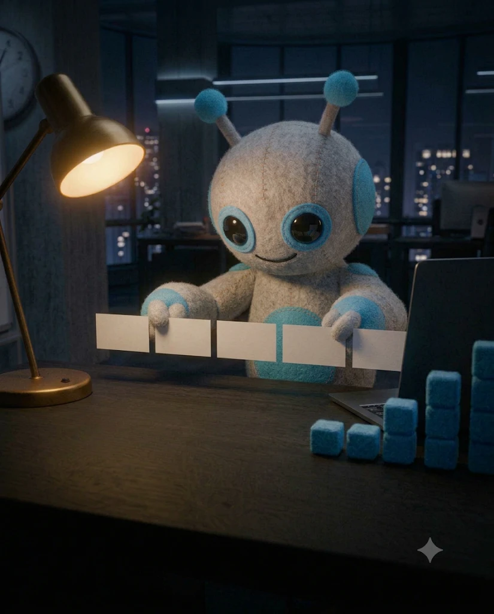

발표 주제, 듣는 사람, 발표 시간, 가진 자료(메모·보고서)를 먼저 붙여 넣고 시작하세요.
아래 자료로 [듣는 사람]에게 [발표 시간]분 발표를 해. 이 발표가 끝났을 때 듣는 사람이 무엇을 결정하거나 알아야 하는지 한 문장으로 써 줘. [자료 붙여넣기]
이 목적에 맞는 목차를 3가지 구조로 제안해 줘. 1) 결론 먼저 2) 문제→원인→해결 3) 시간 순서 각각 장표 제목 목록과 어떤 상황에 맞는지 한 줄.
발표 [시간]분 기준으로 장표 수를 정하고, 장마다 몇 분 쓸지 표로 나눠 줘.
고른 목차의 장마다 '무엇에 대한 장'이 아니라 '무엇이 결론인 장'인지 보이는 제목을 써 줘. 예) '매출 현황' → '3분기 매출 12% 감소, 원인은 신규 고객'
장마다 듣는 사람 머리에 남길 문장 하나와 그 근거 2개를 정리해 줘.
장과 장 사이를 자연스럽게 잇는 한 줄 문장을 넣어 줘. 발표할 때 그대로 말할 수 있게.
듣는 사람이 [임원/실무자/고객]일 때 빼거나 줄여야 할 장과 더 자세히 해야 할 장을 골라 줘.
전체 발표를 맨 앞에 넣을 요약 장표 1장으로 압축해 줘. 결론 1줄 + 근거 3줄 + 요청 1줄.
장 하나씩 붙여 넣고 다듬으세요. 같은 대화창에서 이어 쓰면 앞 내용을 기억합니다.
이 장표 글을 3줄 이내, 줄당 20자 이내로 줄여 줘. 숫자는 남기고 꾸밈말은 빼. [장표 글]
이 문단을 비교 표로 바꿔 줘. 열은 3개 이내, 가장 중요한 줄을 맨 위로.
이 숫자를 보여 줄 그래프 종류를 추천하고, 그래프에서 강조할 한 가지와 제목 문장을 써 줘. [숫자 붙여넣기]
장마다 넣으면 좋을 이미지나 아이콘 아이디어를 하나씩 제안해 줘. 무료로 구하기 쉬운 것으로.
장마다 30초 분량 발표 대본을 써 줘. 실제로 말하는 말투로, 첫 문장은 그 장의 결론.
이 장표 내용을 처음 듣는 사람도 이해하게 비유 하나를 넣어 다시 써 줘.
이 장표에서 가장 중요한 숫자 하나를 크게 보여 줄 문장으로 바꿔 줘. 예) '전년 대비 2배'
본문에 두면 흐름이 끊기는 자세한 내용을 골라 부록 장표로 옮겨 줘.
발표 전날 마지막 5분이면 됩니다.
이 발표를 들은 [듣는 사람]이 할 질문 5개와 각각 30초 답변을 준비해 줘.
장표 전체에서 같은 숫자나 용어가 다르게 쓰인 곳을 찾아 줘.
대본 전체를 소리 내 읽으면 몇 분인지 계산해 주고, [시간]분에 맞게 줄일 곳을 알려 줘.
이 발표 내용에 반대할 사람의 입장에서 반론 3개와 대응 문장을 써 줘.
발표 시작 30초 대본을 써 줘. 인사는 짧게, 결론과 왜 중요한지를 먼저.
마지막 장표를 '감사합니다' 대신 결정 요청이나 다음 행동이 보이는 장으로 바꿔 줘.
발표 후 참석자에게 보낼 메일 본문을 써 줘. 요약 3줄, 결정 사항, 첨부 안내.
이번 발표 구성을 다음에도 쓸 수 있게 빈칸 양식으로 만들어 줘.
PART 1을 마친 뒤 "아래 양식으로 정리해 줘"와 함께 붙여 넣으세요.
[발표 계획] 발표 목적 (1줄): 듣는 사람: 발표 시간: [ ]분 / 장표 수: [ ]장 01 요약: 결론 · 근거 3 · 요청 02 [제목]: 핵심 문장 / 근거 / 그래프·표 03 [제목]: 핵심 문장 / 근거 / 그래프·표 04 [제목]: 핵심 문장 / 근거 / 그래프·표 05 결정 요청 · 다음 단계 부록:
하나라도 '아니오'면 해당 프롬프트로 고치세요.
| 확인할 것 | 기준 | 고치는 프롬프트 |
|---|---|---|
| 첫 장에 결론이 있나 | 요약 장표가 맨 앞 | 08 |
| 제목만 읽어도 이해되나 | 제목에 결론이 들어감 | 04 |
| 장당 글이 3줄 이하인가 | 줄당 20자 이내 | 09 |
| 숫자가 장표끼리 같은가 | 불일치 0개 | 18 |
| 시간 안에 끝나나 | 대본 기준 시간 이내 | 19 |
이 자료는 내용과 구성을 만드는 프롬프트입니다. 구성이 정해지면 회사 PPT 템플릿에 옮기기만 하면 돼서 디자인 시간이 크게 줄어듭니다.
주제와 듣는 사람만 알려 주고 01번을 보내면 목차 초안은 나옵니다. 다만 숫자와 근거는 직접 채워야 정확합니다.
회사 보안 규정을 먼저 확인하세요. 민감한 숫자는 [금액]처럼 가려서 구성만 받아도 충분합니다.
됩니다. 특정 기능 없이 글만 다루는 프롬프트입니다.
이메일만 남기면 바로 열려요. 다음 자료가 나오면 먼저 알려드릴게요.